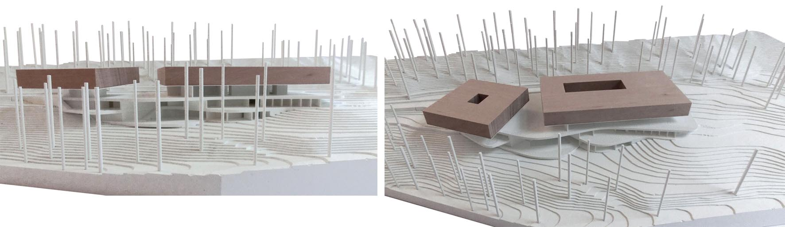
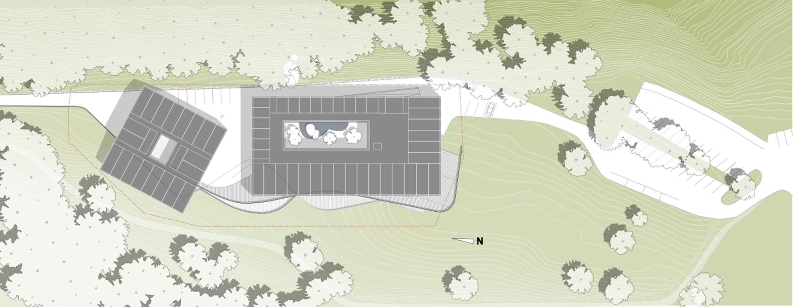
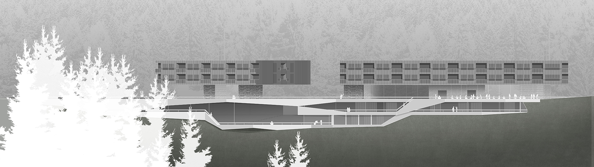
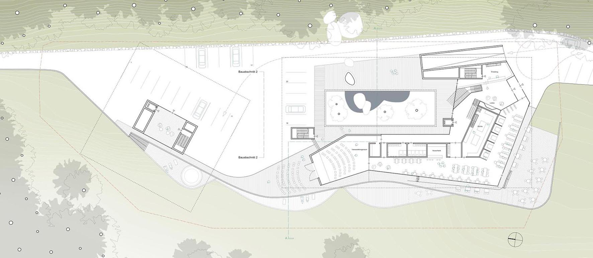
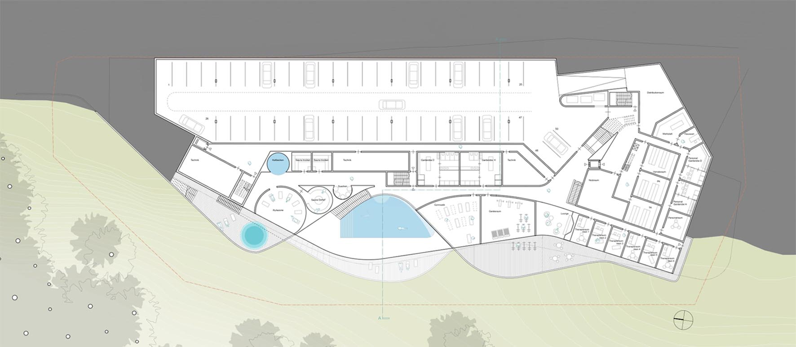
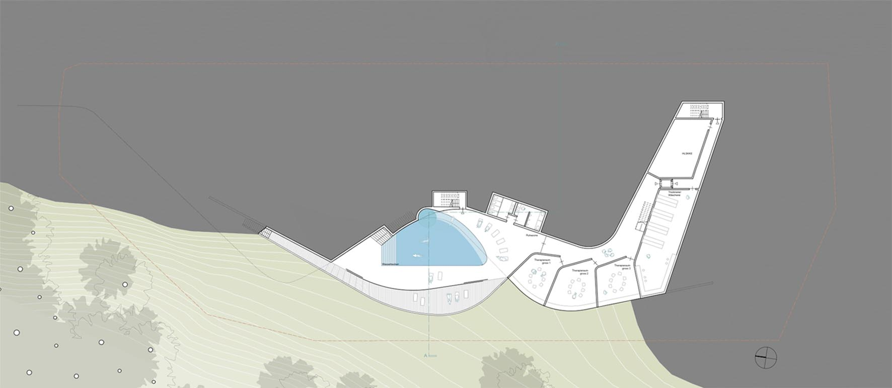
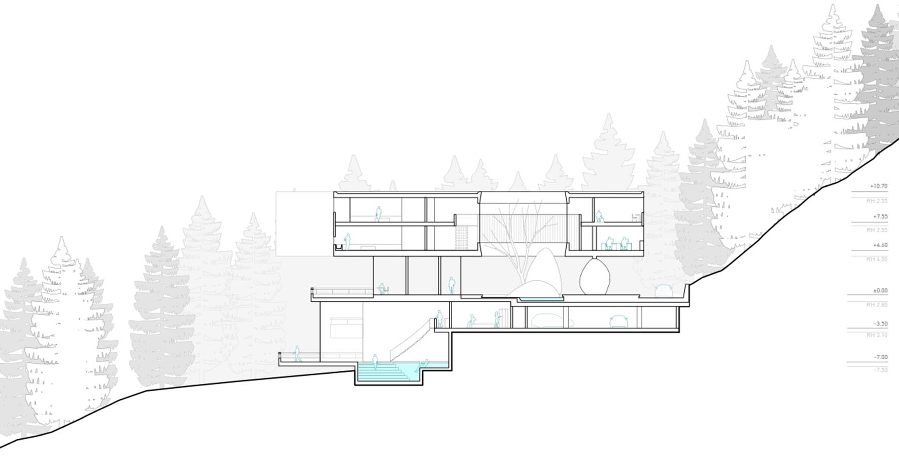
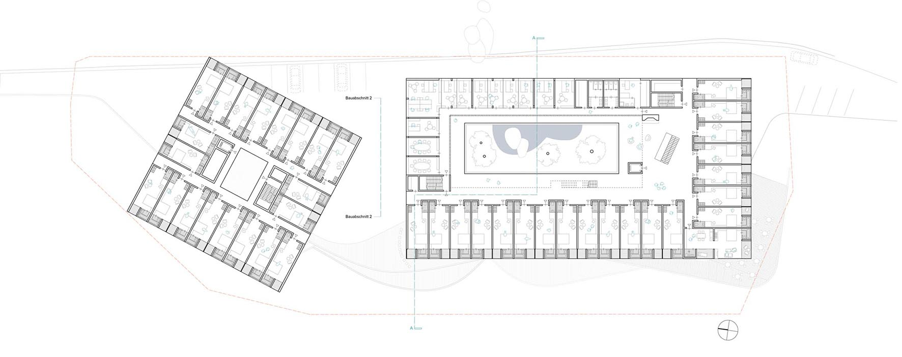
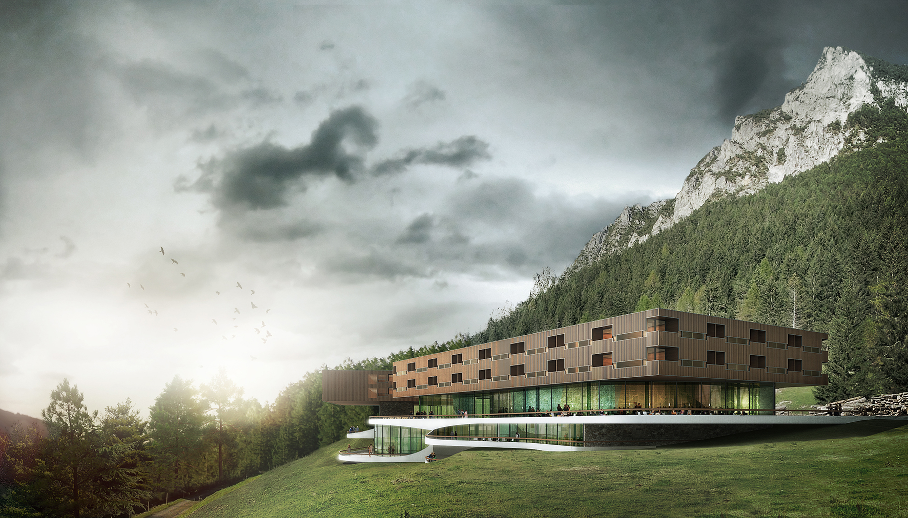
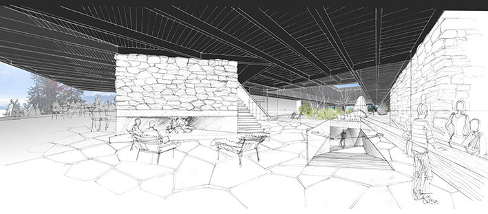

-

maqueta de situación

plano de situación

alzado oeste

planta de acceso

planta -1

planta -2

sección transversal

planta 1

acceso principal
La gran particularidad del lugar en el que se emplaza el solar- Gaflei, con su topografía, su pradera, el bosque, las montañas del “Alpspitz” a sus espaldas y la hermosa vista panorámica del valle del Rhein, compromete casi de manera obligada a un desarrollo de proyecto muy ligado a este paisaje.
Este compromiso se une naturalmente al objetivo final y propósito del edificio, generar un entorno que promueva, apoye y facilite el tratamiento de pacientes aquejados de enfermedades derivadas del estrés.
Para ello es preciso liberar al paciente de su agobiante situación cotidiana, ofrecerle un entorno en contraste con su entorno habitual. Este contraste nos lo brinda el lugar. Es por ello que la arquitectura se contiene y deja al paisaje “hacer el trabajo”.
Para integrar la relativamente grande masa del edificio en el paisaje y transformarla a una escala tolerable para el entorno en el que se enclava, se fragmenta el volumen y se superpone en capas claramente legibles.
La primera capa se integra en la ladera. Las plazas de garaje y los espacios técnicos desaparecen por completo y las zonas de terapia y SPA se abren a amplias terrazas con preciosas vistas. Estas terrazas re-dibujan con sus cantos la topografía de una manera abstracta dotando tanto al edificio como al paisaje de un carácter casi escénico.
Sobre este primer zócalo se encuentra la entrada principal al edificio con el lobby, la zona de restaurante y el salón. Este nivel está diseñado para abrirse al exterior. Espacios servidores como la cocina, la escalera o ascensor y los baños, construyen núcleos masivos cerrados que sirven a su vez como estructura para sustentar las capas superiores, donde se encuentran dos plantas con un total de 50 habitaciones para pacientes, 15 para personal y las zonas de oficinas y administración.
Las 2 plantas superiores constituyen un sencillo cuerpo cúbico, cuyo diseño, carácter y materialidad se corresponde con la construcción agraria típica de la zona. Las habitaciones de estas dos plantas se organizan en torno a un patio, diseñado como espacio de refugio contemplativo de impresionantes paisajes de montaña. La asociación con la estructura de un claustro monacal es intencionada: aquí son otra vez la comunidad, la reunión, y el “encontrarse a si mismo” temas importantes para la expresión formal de la arquitectura.
Los materiales empleados en el proyecto, tanto interior como exteriormente se reducen a dos: piedra y madera. Esto no solo está en relación con la integración en el entorno sino con la construcción de una atmósfera tranquila, que favorezca la concentración y consiga con ello el objetivo de las diferentes medidas terapéuticas que serán adoptadas en la clínica.

vista del hall de acceso